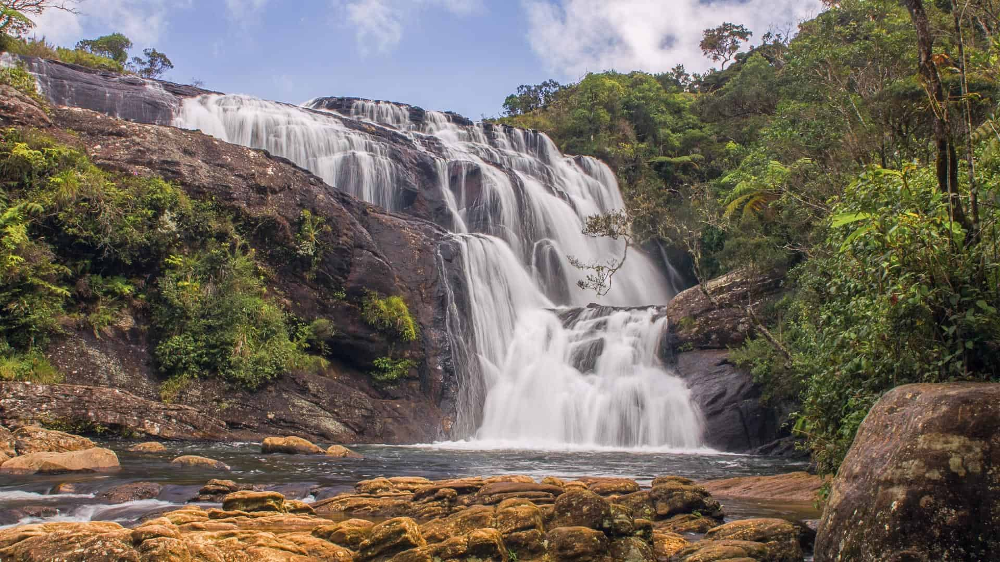
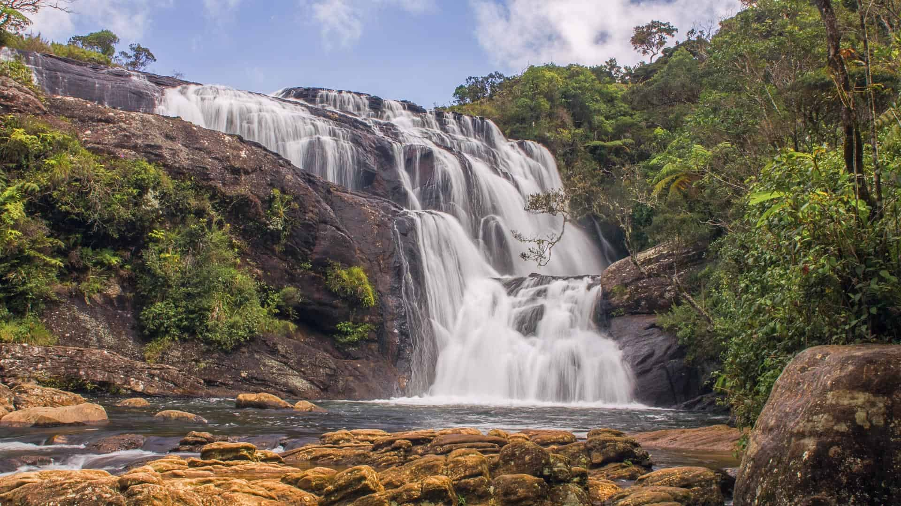
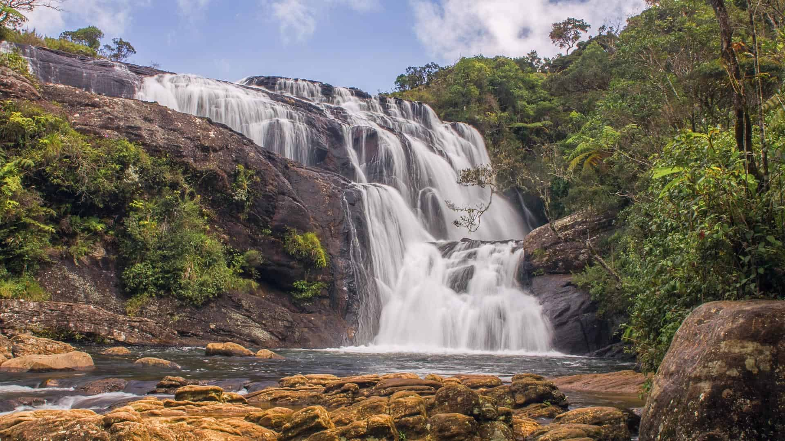
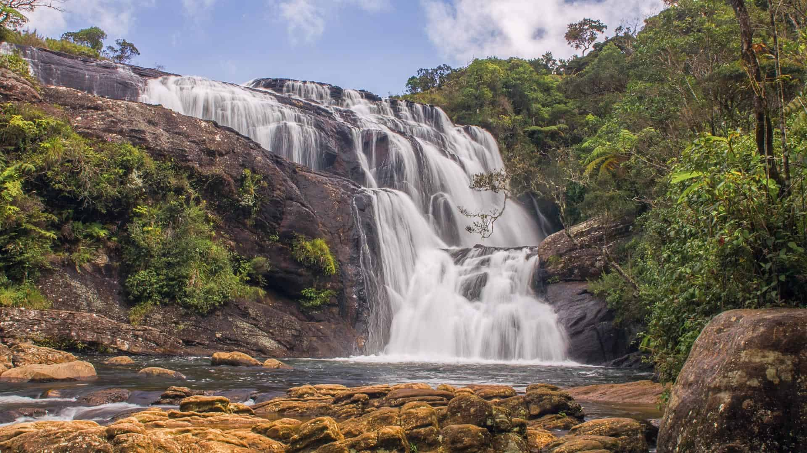
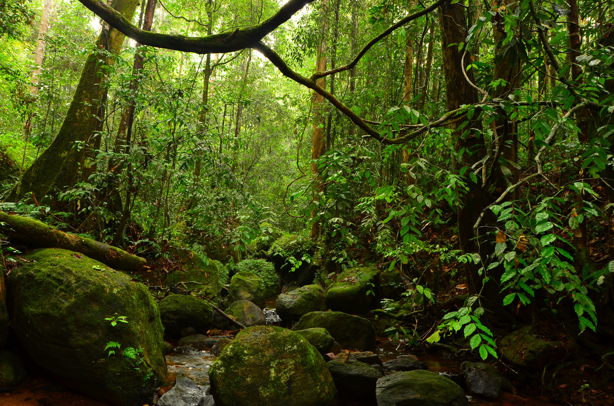
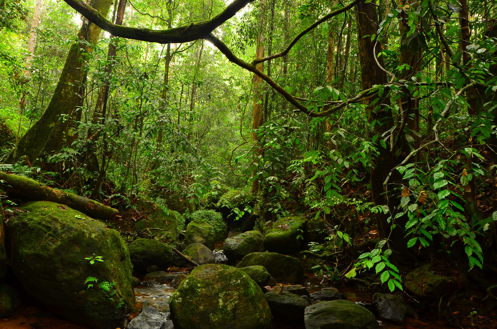

Sri Lanka formerly known as Ceylon and officially the Democratic Socialist Republic of Sri Lanka, is an island country in South Asia. It lies in the Indian Ocean, southwest of the Bay of Bengal, and southeast of the Arabian Sea; it is separated from the Indian subcontinent by the Gulf of Mannar and the Palk Strait. Sri Lanka shares a maritime border with India and the Maldives. Sri Jayawardenepura Kotte is its legislative capital, and Colombo is its largest city and financial centre.
Today, Sri Lanka is a multinational state, home to diverse cultures, languages, and ethnicities. The Sinhalese are the majority of the nation's population. The Tamils, who are a large minority group, have also played an influential role in the island's history. Other long established groups include the Moors, the Burghers, the Malays, the Chinese, and the indigenous Vedda
Sri Lanka has 103 rivers. The longest of these is the Mahaweli River, extending 335 kilometres. These waterways give rise to 51 natural waterfalls of 10 metres or more. The highest is Bambarakanda Falls, with a height of 263 metres (863 ft). Sri Lanka's coastline is 1,585 km long. Sri Lanka claims an exclusive economic zone extending 200 nautical miles, which is approximately 6.7 times Sri Lanka's land area. The coastline and adjacent waters support highly productive marine ecosystems such as fringing coral reefs and shallow beds of coastal and estuarine seagrasses. Sri Lanka has 45 estuaries and 40 lagoons. Sri Lanka's mangrove ecosystem spans over 7,000 hectares and played a vital role in buffering the force of the waves in the 2004 Indian Ocean tsunami. The island is rich in minerals such as ilmenite, feldspar, graphite, silica, kaolin, mica and thorium.
The climate is tropical and warm because of moderating effects of ocean winds. Do you know why this is a reason why you should visit Sri Lanka? Sri Lanka is a tropical island and its climate bein tropical and warm means Sunbathing !!! The best beaches for sunbathing in Sri Lanka deliberately get the attention of visitors. For anybody who visits Sri Lanka, the sea views could be observed in the Colombo area. The Galle Face Green is not only a sea view area but the heart of the Colombo seaside. The most luxurious hotels of Colombo are located right next to Galle Face Green and the Galle Face ground is a famous destination for tourists to enjoy a nice evening walk in Colombo city.
Sri Lanka has the highest biodiversity per unit area among Asian countries for flowering plants and all vertebrate groups except birds. A remarkably high proportion of the species among its flora and fauna, 27% of the 3,210 flowering plants and 22% of the mammals, are endemic. Sri Lanka supports a rich avifauna of that stands at 453 species and this include 240 species of birds that are known to breed in the country. 33 species are accepted by some ornithologists as endemic while some ornithologists consider only 27 are endemic and the remaining six are considered as proposed endemics. Yala National Park in the southeast protects herds of elephant, deer, and peacocks. The Wilpattu National Park in the northwest, the largest national park, preserves the habitats of many water birds such as storks, pelicans, ibis, and spoonbills. The island has four biosphere reserves: Bundala, Hurulu Forest Reserve, the Kanneliya-Dediyagala-Nakiyadeniya, and Sinharaja. Sinharaja is home to 26 endemic birds and 20 rainforest species, including the elusive red-faced malkoha, the green-billed coucal and the Sri Lanka blue magpie. The untapped genetic potential of Sinharaja flora is enormous. Of the 211 woody trees and lianas within the reserve, 139 (66%) are endemic.
 

The above 3 factors along with a few others have resulted in Sri Lanka having ....
The 8th wonder of the world, The Sigiriya Fortress
Magnificient Coral reefs
Thick rainforests enriched with life